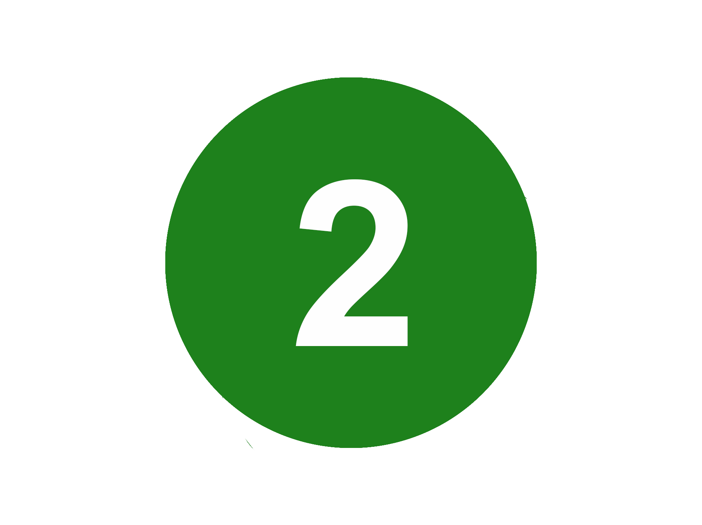
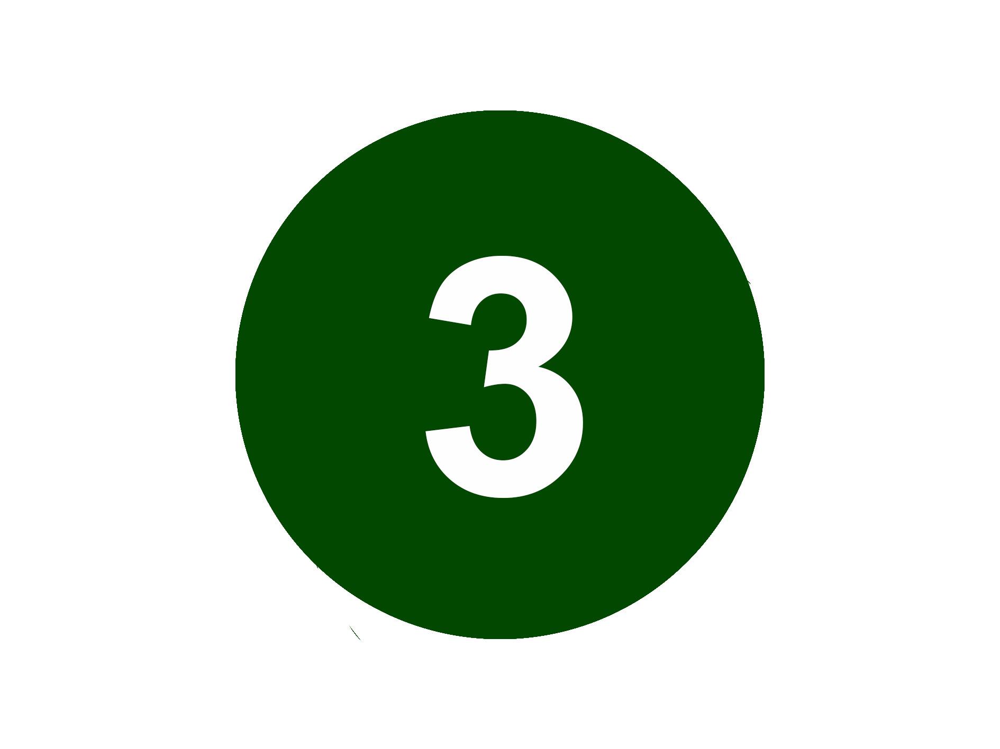
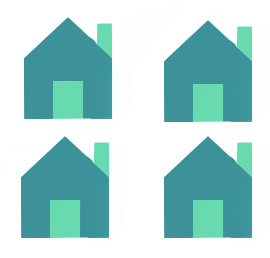

GREEN THE F*CK UP!
Problem
The Impacts of City Living
Cities that have developed up to this day has not given much room for a very important and substantial part of what it means to be a living and breathing human being. Humans have their origins in nature and have lived off natural resources since the early days. Placing millions of humans in a concrete jungle with little to no green spaces is an unnatural habitat. It can cause problems not only harmful to the environment but also our physical and mental health. Studies from several renowned university institutions have concluded that there is a strong correlation between self-reported general happiness and physical health and ease of access to green spaces. According to UN’s recent estimates, 3.3% of global deaths are related to health implications caused by a lack of green spaces.
Image: Large amounts of vehicle emissions fogging up the roads.
© Arne Ristesund
Image: Air pollution fogging up Oslo City on a cold winter day in 2016.
© Svein Nordrum / Samfoto / NTB scanpix
Climate Implications
In addition to the health implications the lack of green spaces has for humans, the environmental conditions are also highly reliant on sufficient green spaces. All plants and trees produce oxygen and reduces CO2 levels, and also help filter out other air pollutants such as airborne dust particles. In a city such as Oslo, the concentration of urban settlement is very high in certain areas and air quality vary significantly between these depending on how much green spaces there are in these areas.
Oslo as the European Green Capital
Oslo was elected as the European Environmental Capital of 2019. One of the reasons the city won this title, was the initiative to encourage emission free transport such as electric vehicles, cycling and the establishment of car free zones. However, although this is a great initiative, we believe Oslo has not fulfilled the full environmental potential that comes with this title. Especially in terms of urban green spaces, there is a lot more that could be done in order to create green lungs for the city. We in GreenUp believe that we must scale up the green urban initiative to create a truly better environment for Oslo’s inhabitants and animal life.
Image: Car emissions from traffic congestions contribute greatly to air pollution.
© Berit Roald / NTB scanpix
Image: Oslo is the European Enviromental Capital of 2019. However, there is very little actual greenery in the city.
© Jarle Aabø
Green Cities in a Historical Perspective
Making room for more green spaces in cities around the world is not a new thing. Even in the medieval times, garden plots and parks around town houses was a fairly normal sight. There is well documented evidence that people used to grow small plots of land with vegetables and fruits in larger urban areas in Europe. Either this was along the wall towards a river, or in backyards between town houses, their purpose back then was mainly for aesthetic or cultivational reasons. Today, there is very little vegetation in urban areas, and there is a need to reverse this trend.
Our Mission


Food Production
Locally grown food creates important economic opportunities, provides health benefits and helps to reduce environmental impact. It also helps bring the community together and gives people the opportunity to make a difference. Additionally, many people feel local food tastes better and lasts longer.
As stated by Margaret Floyd: “The nutritional value of local produce is greater than produce that's been shipped long distances because local produce is fresher.” Vegetables and fruits that are shipped long distances might have been grown without pesticides, chemical fertilizers, genetic modification, or irradiation, but they are usually picked before they are ripe, which negatively impacts both nutritional content and flavor.

Greenery and weather
Large gravel roofs, like the ones often found in cities, absorb a lot of heat during warmer days. Because they are in direct sunlight, the temperatures of these rooftops gets very high. This warmth radiates back into the environment, making cities up to 3 to 5 celsius degrees warmer than suburban areas, on hot days. More green rooftops will decrease the city temperature.
Rooftop gardens can also lead to less and more effective use of energy. By working as a natural layer of insulation, green roofs will help keep the heat inside the building during the winter, and the heat out during summer.
Additionally, green roofs retain and manage stormwater. This, by capturing the water when it rains and then slowly release it through evaporation and plant use.
Our Concept
While it may not seem like the most unique and innovative idea at first glance, we believe that our way of transforming rooftops and walls into green lungs is not something that the world has ever seen before. This is particularly due to two reasons. The first is our focus on utilizing these spaces for organic and local food production. Secondly, our product is unique due to its innovative design.
Image: Green mat. Easily transportable and easy to implement on a roof.
© Rukeri
Many people believe making a roof garden to be a simple affair. However, simply dumping normal dirt to a roof will likely lead to soil compaction, dead plants, leaks and even collapsed ceilings. Therefore, there is a need to be extra mindful of which soil to use when building a roof garden. Because of this, we are introducing the green mat. This i a soil matt carefully engineered to mimic natural soil whilst simultaneously catering to an environment very differen from the ground. It consists of a carefully manufactured mix of minerals and organic matter, and a customizable blend of seeds to fit your particular desires. It simply needs to be rolled out, and rain water will do the rest of the job to activate the growth. Join us, and roll out your own gardens of herbs, lettuces, sprouts, or some of our other options. The mat can easily be fitted and installed to any outdoor surface, whether this is a flat or tilte roof, a wall, a veranda, or any other free surface.
Image: Green rooftops help further improve the enviroment and air quality in cities.
© Monica Løvdahl
In addition to our green mat, we carry a line of other customizable growths, such as fruit trees, berry bushes,and deeper soil beds for root vegetable production.
Ordering a product is easy! Look through our range of products in the webshop, and think about what you find suitable for your surface. Measure up how much you need, and hit order.
Image: The roofgardens make room to even grow apple trees on your very own rooftop!
© Grofondet
We are continuously working on establishing contracts with schools, public buildings, company headquarters and housing co-ops. If you want to order through one of these deals, you can easily contact us at the bottom of our website.
View ProductsImage: A visual model of what the ultimate goal of a roofgarden would look. Using the full area for green purposes.
© Arcasa Arkitekter
How to Green Up Step By Step

Check if we have already established a contract with your company, school, housing co-op etc.
Go through our selection of the different products and solutions in the online store and choose one you like.
Order the product through our online store and we will deliver it to you within a few days!
